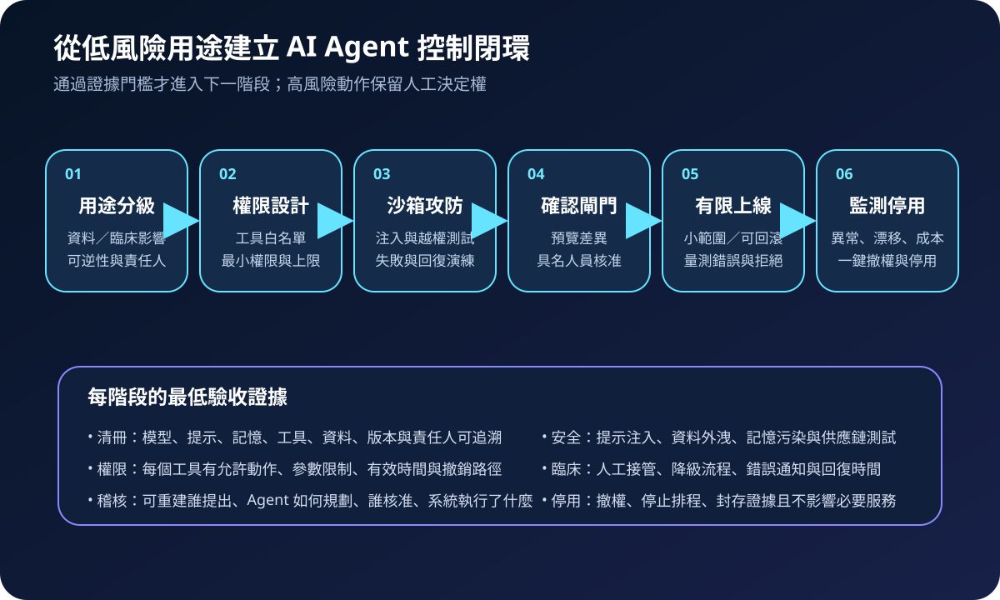
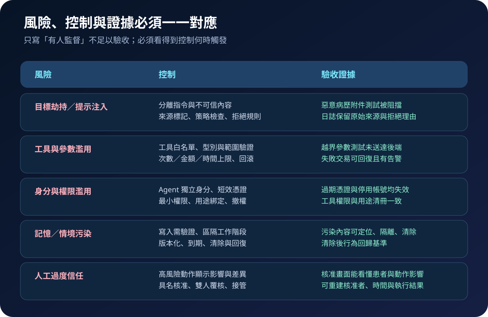

醫療資安國際觀察 · 2026-08-27
醫療 AI Agent 如何安全採取行動：從工具權限到人工確認
作者：Dr. William｜醫療資訊與資安治理實務工作者
AI Agent 與一般對話模型的差異，在於它能分解目標、保留情境並呼叫工具。當工具連到排程、通知、病歷或行政流程，安全治理須從「回答是否正確」擴大到「能做什麼、何時須停下、誰核准及如何回復」。
名詞解釋：模型、Agent 與工具權限
model inventory 記錄模型、版本、用途、資料、提示、記憶、工具及責任人。prompt injection 是不可信內容誘使系統偏離原始目標。tool permission 定義 Agent 可呼叫的 API、動作與參數範圍。human-in-the-loop 不是有人旁觀，而是在不可逆、高影響或例外動作前由具名人員確認。audit trail 則須重建輸入來源、模型版本、規劃、工具參數、核准與結果。
國際現況與適用邊界
NIST 於 2025 年 12 月發布 Cyber AI Profile 初稿，依 CSF 2.0 整理保護 AI 系統、以 AI 支援防禦及面對 AI 攻擊等方向；該文件仍是美國自願性框架的公開草案。NIST 另於 2026 年 2 月啟動 AI Agent Standards Initiative，聚焦互通性、安全與可信身分等標準工作。OWASP 於 2025 年 12 月發布 Agentic Applications Top 10，列出目標劫持、工具濫用、身分與權限濫用、記憶污染、連鎖失敗及人機信任利用等風險。
法域與效力：NIST 文件與標準倡議屬美國技術治理脈絡，OWASP 清單是國際社群風險框架，均不是台灣醫療機構的直接法定義務。台灣醫院可把其中的清冊、最小權限、人工確認及稽核要求轉為院內風險控制；涉及病歷、個資、醫療決策或 SaMD 時，仍須依台灣法規、主管機關公告、臨床治理與個案法律評估確認。
規劃：先限制用途，再設計可驗收權限
範圍可先選擇不直接改寫病歷的低風險用途，例如文件分類、內部知識檢索或待辦草擬。角色至少包含臨床服務擁有者、資訊、資安、資料治理、法務／隱私及模型供應方。每個用途須定義允許資料、工具白名單、禁止動作、人工確認點、錯誤接管、日誌保存與停用責任。指標可包含清冊完整率、未授權工具阻擋率、高風險動作核准率、注入測試通過率、可重建稽核事件比例及撤權完成時間。

實作：把自主性拆成可控制步驟
- 建立清冊：記錄模型與 Agent 版本、提示、記憶來源、工具、資料、擁有者及變更日期。
- 隔離不可信內容：區分系統指令與病歷附件、郵件、網頁等外部內容，標記來源並限制其改寫目標。
- 建立工具閘道：採 Agent 獨立身分、短效憑證、API 白名單、參數驗證、次數與金額上限。
- 設定人工確認：寫回病歷、對患者發訊、建立醫囑或大量異動前，呈現動作、對象、差異及影響供具名核准。
- 保留完整軌跡：串接輸入、規劃、工具請求、核准與執行結果，避免只保存最後回答。
- 演練停用與回復：測試撤銷權限、停止排程、隔離污染記憶及人工接管，不中斷必要服務。
風險：人工確認也可能只是橡皮圖章
常見失敗包括共用高權限帳號、把外部文件直接當指令、核准畫面看不到實際參數、記憶污染跨工作階段延續，以及多個 Agent 互相呼叫造成連鎖錯誤。若人員只能看到流暢摘要，仍可能在時間壓力下誤准。緩解方式是顯示原始來源與執行差異、限制單次影響範圍、讓高風險動作可逆，並以惡意輸入、越權參數、過期憑證及回復演練驗收。

可執行清單
- 能否列出每個 Agent 的版本、用途、資料、記憶、工具與責任人？
- 外部內容是否被視為不可信資料，而非可直接執行的指令？
- 每個工具是否有獨立身分、最小權限、參數限制與撤銷路徑？
- 高風險動作的核准畫面是否顯示對象、差異與實際影響？
- 日誌能否重建輸入、規劃、核准、工具請求與執行結果？
- 污染記憶、工具失效或 Agent 停用時，是否能人工接管並回復？
來源
- NIST｜IR 8596 Cybersecurity Framework Profile for Artificial Intelligence（初稿）（發布：2025-12-16；規劃更新：2026-04-21；查閱：2026-08-27）
- NIST｜AI Agent Standards Initiative（建立：2026-02-17；更新：2026-08-14；查閱：2026-08-27）
- OWASP GenAI Security Project｜Top 10 for Agentic Applications 2026（發布：2025-12-09；查閱：2026-08-27）
內容說明
本文依健康台灣深耕計畫相關治理內容整理，並參考 NIST 與 OWASP 的近期公開資料，提出台灣醫療機構可採用的 AI Agent 權限、人工確認與稽核框架；不取代主管機關正式公告、醫療法規、臨床專業判斷或個別系統風險評估。